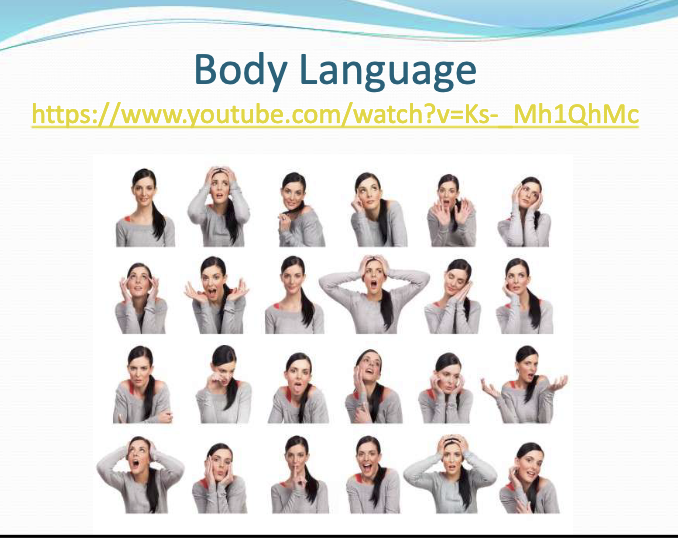

Body Language: Visual Guide

Row 1
-
Relaxed and approachable
Visible cues: Upright posture, relaxed shoulders, direct gaze, and a small smile.
May suggest: Calm attention, comfort, friendliness, or readiness to engage.
-
Alarm or intense stress
Visible cues: Both hands grip the head; the eyes are wide and the mouth is open.
May suggest: Shock, panic, sudden worry, or feeling unable to manage what is happening.
-
Presenting or inviting
Visible cues: A tilted head, soft smile, and one palm turned upward.
May suggest: Offering an idea, welcoming a response, introducing something, or playful confidence.
-
Thinking or disengaging
Visible cues: The cheek rests on one hand while the eyes look upward and away.
May suggest: Reflection, daydreaming, trying to remember, tiredness, or boredom.
-
Startled or saying “wait”
Visible cues: Raised open palms near the face, lifted eyebrows, and an open mouth.
May suggest: Surprise, self-protection, refusal, or an urgent wish for something to stop.
-
Dreamy or delighted
Visible cues: The head tilts into both hands and the gaze turns upward with a soft expression.
May suggest: Affection, admiration, pleasant imagining, contentment, or playful posing.
Row 2
-
Hopeful or imagining
Visible cues: The eyes look upward while both hands lightly frame the face.
May suggest: Anticipation, wishing, recalling an idea, or searching for an answer.
-
Animated surprise
Visible cues: Open palms lift beside the shoulders; the eyes and mouth are wide.
May suggest: Excitement, disbelief, amazement, or an expressive “What happened?”
-
Composed and confident
Visible cues: Balanced upright posture, direct gaze, relaxed face, and a slight smile.
May suggest: Comfort, steady attention, confidence, or a neutral listening position.
-
Overwhelmed
Visible cues: Both hands cover the ears or sides of the head while the mouth is open.
May suggest: Sensory overload, frustration, distress, or wanting to block out sound or information.
-
Sleepy or content
Visible cues: Closed eyes, tilted head, and hands placed together like a pillow.
May suggest: Sleep, tiredness, peacefulness, rest, or a playful request for a break.
-
Uncertain or unimpressed
Visible cues: The cheek rests on one hand; the eyes glance sideways and the mouth is tense.
May suggest: Doubt, impatience, concern, boredom, or careful evaluation.
Row 3
-
Angry or guarded
Visible cues: Crossed arms, lowered eyebrows, direct stare, and a tightly closed mouth.
May suggest: Displeasure, defensiveness, resistance, or simply feeling cold or physically comfortable that way.
-
Sad or disappointed
Visible cues: Lowered head and eyes, collapsed posture, and a hand near the face.
May suggest: Sadness, embarrassment, disappointment, fatigue, or avoiding attention.
-
Shocked
Visible cues: Raised eyebrows, wide eyes, open mouth, and the body leaning slightly forward.
May suggest: Sudden surprise, disbelief, fear, or strong interest in unexpected news.
-
Amused or joyful
Visible cues: Head tipped back, broad open smile, and a relaxed upper body.
May suggest: Laughter, enjoyment, relief, excitement, or social connection.
-
Worried or tense
Visible cues: Hands press into the cheeks; the lips are pursed and the gaze turns downward.
May suggest: Anxiety, strain, deep concentration, waiting, or physical discomfort.
-
Confused or protesting
Visible cues: Both palms turn upward, the head turns to the side, and the mouth is open.
May suggest: A question, confusion, frustration, disagreement, or asking for an explanation.
Row 4
-
Panic or disbelief
Visible cues: Hands clasp behind the head, elbows spread wide, eyes lifted, and mouth open.
May suggest: Strong shock, helplessness, panic, or an intense reaction to an outcome.
-
Distressed or exhausted
Visible cues: Both hands hold the face; the eyelids are heavy and the posture droops.
May suggest: Fatigue, sadness, worry, headache, sensory strain, or emotional overload.
-
Requesting quiet
Visible cues: One index finger is held vertically in front of closed lips.
May suggest: “Please be quiet,” secrecy, careful listening, or a reminder not to interrupt.
-
Happy and engaged
Visible cues: Broad smile, bright eyes, lifted cheeks, and an upright relaxed posture.
May suggest: Enjoyment, enthusiasm, friendliness, pride, or positive connection.
-
Worried or under pressure
Visible cues: Both hands press on top of the head; the eyebrows lift and draw together.
May suggest: Stress, fear, frustration, headache, or trying to process a difficult situation.
-
Friendly or explaining
Visible cues: Soft smile, tilted head, relaxed shoulders, and one hand gesturing outward.
May suggest: Welcoming conversation, offering an idea, reassurance, or a playful invitation.